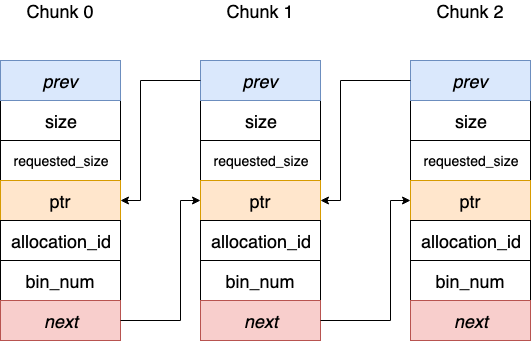
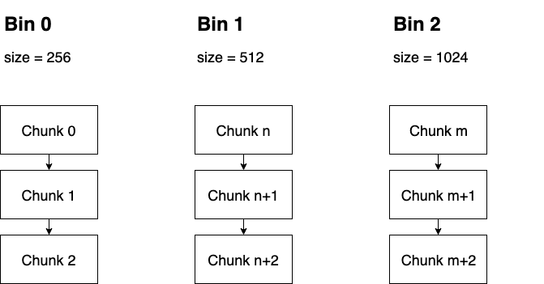
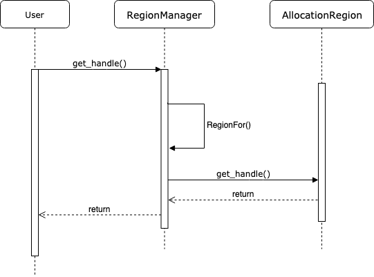
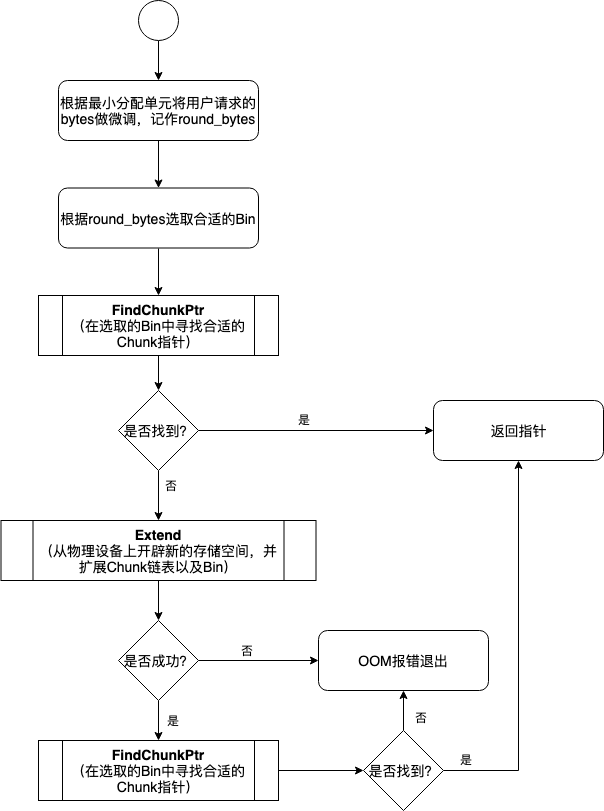
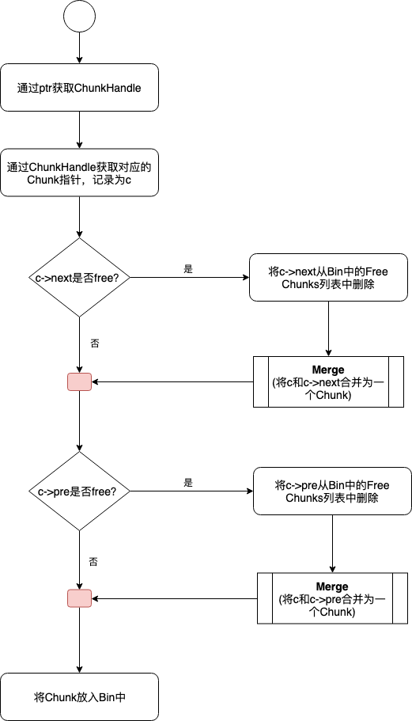

TensorFlow中的显存管理器——BFC Allocator
使用GPU训练时，一次训练任务无论是模型参数还是中间结果都需要占用大量显存。为了避免每次训练重新开辟显存带来计算之外的开销，一般框架的做法是在真正的训练任务开始前，将每个节点的输入和输出，以及模型参数的shape计算出来并全局开辟一次，例如Caffe就是这种做法。
随着深度学习模型的发展和迭代，不仅模型训练的数据shape可能发生变化，就连模型本身在训练过程中也可能发生变化，那么按照固定shape一次开辟显存的做法就不能满足需求了。
为此，TensorFlow重新设计了较为灵活的显存管理机制，它使用了名为BFC的分配算法，并通过BFC Allocator为每个Tensor分配满足需求的显存。本节我们将一起窥探BFC Allocator的设计思想。
从Tensor的创建谈起
为Tensor分配存储区的时机
在进入主题之前，让我们先思考一个问题：TensorFlow中的Tensor究竟是何时拿到所需存储区的呢？答案是在Tensor对象被创建时就立即进行分配。
在TensorFlow的一轮训练结束后，所有的Tensor都已经被释放，下一轮计算开始后会按照需求重新创建Tensor，并为其分配新的存储空间。
下面的代码片段中我们可以看到Tensor创建时，使用Allocator分配存储区的代码段。
'''
Allocator* a: 指向一个分配器对象的指针，该分配器用于管理内存分配。
DataType type: 表示张量的数据类型，如浮点数、整数等。
const TensorShape& shape: 表示张量的形状，即它的维度信息。
'''
Tensor::Tensor(Allocator* a, DataType type, const TensorShape& shape)
: shape_(shape), buf_(nullptr) {
set_dtype(type);
CHECK_NOTNULL(a);
if (shape_.num_elements() > 0 || a->ShouldAllocateEmptyTensors()) { // 条件内存分配
CASES(type, buf_ = new Buffer<T>(a, shape.num_elements())); // 这一行是一个宏或模板，根据数据类型 type 创建一个适当类型的 Buffer<T> 对象，并初始化 buf_
}
if (buf_ != nullptr && buf_->data() != nullptr && LogMemory::IsEnabled()) {
LogMemory::RecordTensorAllocation("Unknown", LogMemory::UNKNOWN_STEP_ID, // 用于记录分配事件
*this);
}
}
Template <typename T>
Buffer<T>::Buffer(Allocator* a, int64 n,
const AllocationAttributes& allocation_attr)
: BufferBase(a, a->Allocate<T>(n, allocation_attr)), elem_(n) {}
// 因为在此处调用了Allocate函数，此时Buffer真正获得了一片实际的存储区。这已经能够说明存储区分配的时机是在一个Tensor对象被创建时立即发生的。
张量创建
以下是一些关键时刻，这些张量会被创建：
1. 模型定义时
在定义 MLP 模型时，你需要指定模型的结构，包括各层的类型、大小和连接方式。此时，会创建与模型参数（权重和偏置）相关的张量。这些张量通常在模型的初始化阶段就已经定义好，并在训练过程中被优化。例如，每个全连接层（dense layer）都会有相应的权重和偏置张量。
2. 模型编译时
当你编译 TensorFlow 模型（通过 model.compile() 调用），准备它们进行训练或推理时，会设置损失函数、优化器和评价指标。这一步骤可能不直接创建张量，但会准备必要的基础设施，例如梯度张量，这些张量用于在训练期间更新权重。
3. 加载模型数据时
在进行推理之前，你需要加载或指定输入数据。输入数据在送入模型前通常被封装为一个张量。这是在推理或训练过程开始前的一步，确保所有输入数据都以正确的形式（尺寸和类型）被处理。
4. 执行推理时
在模型推理（或称为前向传播）过程中，数据会通过模型的各层。每一层都会对输入数据执行计算，并生成输出数据，这些数据同样被存储在张量中。例如，一个典型的全连接层会计算 output = activation(dot(input, kernel) + bias)，其中 input, kernel (权重), 和 bias 都是张量，output 也会被存储为一个新的张量。
5. 后处理
在得到最终的输出后，可能还需要对这些输出进行进一步的处理，如应用 softmax 函数来获取概率分布。这一步骤可能会创建新的张量来存储处理后的结果。
遇到的问题——显存分配与回收的性能需求
Tensor在每次创建时会得到存储区域，而每一轮训练都要重新创建新的Tensor，那么这里面临的一个问题：**如此频繁的分配和回收存储区，如何才能做的高效？**试想对于GPU来说，如果Allocate函数直接封装CUDA中昂贵的cudaMalloc函数，当Tensor被释放时直接调用cudaFree函数，那么训练速度将会因为这些overhead大打折扣。
解决问题的基本思路——存储池
如果你对操作系统这门课比较熟悉，那么应该很容易想到解决办法：**将显存按照不同的大小一次性开辟出来，并组成存储池，每次调用Allocate函数时从存储池中获取，Tensor回收时将显存重新挂到存储池中。**这样做确实可以满足性能需求，但是需要为此设计一个相对复杂的存储管理器。BFC Allocator就是TensorFlow中管理GPU显存的存储管理器。
好了，需求和背景都已经了解了，接下来可以进入正题了，让我们先从原理开始说起。
BFC Allocator 的关键特性
Best-Fit（最佳适配）：
每次分配内存时，分配器尝试找到能满足请求大小的最小可用块（最佳适配策略）。
这样可以尽量减少内存碎片。
Coalescing（合并）：
当释放一个块时，尝试与相邻的空闲块合并以形成更大的空闲块，从而减少内存碎片。
Bin System（Bin 系统）：
使用多个 Bin 来组织不同大小的内存块。
每个 Bin 中的块大小相近。
每个 Bin 内部使用有序的集合（例如
std::set）来存储Chunk。
Chunk：
内存块的基本单元，包含指针、大小、状态等信息。
BFC Allocator 的结构
Chunk：每个
Chunk代表一个内存块，包含指向实际内存的指针，以及块的大小等属性。Bin：每个 Bin 维护一组相似大小的内存块，以方便检索和管理。
Free List：每个 Bin 内部维护一个空闲块的集合，方便寻找适合的块。
BFC Allocator 内存分配流程
找到合适的 Bin：
根据请求的大小，确定应使用哪个 Bin。
不同 Bin 存储不同大小范围的内存块。
寻找最佳适配块：
在合适的 Bin 中找到能满足请求的最小空闲块。
若找到的块比请求的块大，则进行拆分，将剩余部分放回空闲列表。
分配块：
更新
Chunk状态为已分配。返回
Chunk中的指针以供使用。
BFC Allocator 内存释放流程
标记块为已释放：
找到对应的
Chunk，标记其状态为已释放。
合并相邻块：
尝试与相邻的空闲块合并成更大的块。
更新前驱和后继指针以维持双向链表的逻辑顺序。
放回空闲列表：
将合并后的块放回合适的 Bin 中。
Best-Fit with Coalescing与dlmalloc
BFC的全称是Best-Fit with Coalescing。最适合合并。
从TensorFlow源码注释中得知，BFC算法并非TensorFlow完全原创，而是dlmalloc的一个简单实现版本。dlmalloc是一款优秀的存储分配器，它以Doug Lea的名字命名。之所以在TensorFlow中引入一个简单版本的dlmalloc算法，是因为该算法可以非常高效的按需分配和回收存储区，并尽可能减少存储碎片。
BFC Allocator基本原理
核心在于将存储区划分成块，并挂入存储池中进行管理。将存储区划分成存储块时要满足以下要求。
块内地址是连续地址
存储池中的块要以每个块基地址升序排列，并组织成双向链表
高地址块的size大于低地址块的size
TensorFlow将存储块以及相应的块信息抽象为一种叫做Chunk的数据结构。
核心数据结构
Chunk
Chunk是BFC最核心的数据结构之一，在TensorFlow源码中是以struct来描述的。具体来说，一个Chunk代表一段连续的存储空间，BFC要求各个Chunk要按照基地址升序排列并组织成双向链表，下图展示了Chunk的结构以及Chunk之间的连接关系。初始时，每个Chunk都有自己的size，并且这些size都是以256字节为模。应当注意，每个Chunk或者完全被标记为使用，或者完全标记为空闲，不存在该Chunk内只有部分空间被使用的情况。

prev，next：这两个变量起到指针作用，分别指向前驱和后继Chunk。因为在BFC Allocator模块中多个chunk都被放入了vector中，所以这两个指针实际上就是前驱和后继的index
ptr：该Chunk的起始存储地址，或者叫基地址
size：该Chunk描述存储区的实际总大小，每个Chunk的size是不同的，但都以256字节为模
requested_size：该Chunk描述存储区的使用大小，代表了用户请求使用的大小，它一定小于等于size。因为Chunk不能被部分使用，所以即使用户实际只使用requested_size，那么也只能将整个大小为size的Chunk全部分配出去，显然这可能会造成一些碎片的浪费
allocation_id：该值如果不为0，则代表已经被标记为使用，反之则是空闲
bin_num：代表该Chunk所在Bin的Index。
Bin是另一个核心数据结构，下面将会做详细介绍
Bin
在管理 Chunk 的过程中，有两个重要的目标：
快速检索：在 Bin 中能够根据
Chunk大小迅速找到合适的内存块。维护逻辑顺序：有时需要保持内存块之间的顺序关系，比如合并相邻的空闲内存块。
如果我们想查询某一块符合条件的空闲Chunk并取出，那么只能对双向链表做遍历，显然这个效率不是很高。
为了加速查询某块Chunk的速度，可以在创建Chunk链表时按一定顺序排列，并将整个有序链表在逻辑上切分成多个段，为每个段记录所包含的Chunk的范围，这种结构就是Bin，它相当于一种索引。
因此，Bin结构是为了方便Chunk的查询而出现的。
在BFC Allocator中，每个段中Chunk的顺序是按照size和基地址升序排序的，每个Bin都设有自己的bin_size，该bin_size表示该段包含的最小Chunk的size。
这样一来，用户端就可以根据所需要申请的Memory大小直接找到对应的Bin，然后在该Bin中遍历寻找适合的Chunk。
为了能够根据bin_size直接定位到Bin，规定bin_size与bin_num的大小关系为：bin_size=256 * 2bin_num。
用户在申请Memory时，会将实际大小映射到最适合的bin_size上，然后再根据bin_size与bin_num的关系找到对应的Bin，进而在该段中遍历搜索。

Bin中Chunk的是通过Set组织的，为了能在Set中体现双向链表的逻辑，只需要让Chunk在Set中按照规则升序排列，并修正前驱后继指针即可。
指定Chunk顺序的Comparator代码段定义在Bin结构中，如下所示。
// Sort first by size and then use pointer address as a tie breaker.
// 比较器函数
bool operator()(const ChunkHandle ha,
const ChunkHandle hb) const NO_THREAD_SAFETY_ANALYSIS {
// 从句柄获取内存块指针
const Chunk* a = allocator_->ChunkFromHandle(ha);
const Chunk* b = allocator_->ChunkFromHandle(hb);
// 首先按内存块大小比较
if (a->size != b->size) {
return a->size < b->size;
}
// 如果大小相同，则按指针地址比较
return a->ptr < b->ptr;
}
Set 中的 Chunk 是按照某种排序规则排列的。Set 数据结构：使用 C++ 标准库中的 std::set，它基于红黑树实现，保持数据有序。
排序规则是：
首先按
size（大小）排序。如果
size相同，则按ptr（指针地址）排序。
Set 的双向链表性质：
虽然
Set本身不提供链表结构，但通过前驱和后继指针可以构建出链表的逻辑。每个
Chunk对象维护两个指针：prev和next，指向前一个和后一个Chunk。在
Set中按照排序规则排列后，修正每个Chunk的prev和next指针，使它们形成一个双向链表。
辅助工具类
AllocationRegion与RegionManager
这两个类是起到辅助作用。
BFC Allocator每次分配存储区时都以Chunk为单位，指向Chunk的指针又是ChunkHandle类型（实际为数组下标），但分配存储的最终目的是把Chunk中指向存储区域的头指针ptr分配给请求方。
另外，当系统回收存储区时，面对的也是存储区的头指针，那么如果不能根据头指针找到Chunk和Bin信息，回收就不能成功。因此这里显然应该设计一系列接口和函数：它能够记录每次分配的Chunk，并且能够保存分配存储区的地址ptr与Chunk之间的映射关系。AllocationRegion和RegionManager就是完成这些功能的接口。
具体而言，AllocationRegion对应一次存储区分配的记录。
一次存储区分配的信息包括起始地址ptr和存储区大小memory_size，这可能包括多个Chunk，所以该结构要记录此次分配中所包含所有Chunk的信息。
RegionManager是AllocationRegion的管理器，它维护了AllocationRegion的数组。在RegionManager中，AllocationRegion数组是需要按照end_ptr地址排序的。
利用RegionManager查询某个ptr所对应的ChunkHandle的时序图如下图所示。

BFC分配与回收策略
介绍完基本结构和BFC的设计思想之后，就可以试着去理解具体的存储区分配和回收过程了。
Allocate流程
AllocateRawInternal
这是BFCAllocator的为用户分配Chunk的总体流程。
因为物理设备上实际的空闲存储区已经被事先开辟好，并以Chunk的形式组织成了双向链表，那么BFC Allocator为用户分配存储区时直接从Chunk中获取即可。
当双向链表中找不到合适的Chunk时，不得不向物理设备上申请更多存储空间，并创建新的Chunk放入到双向链表中，并挂入到B相应的Bin中。
下面的流程图展示了这一过程，该过程涉及到了几个比较重要的子过程。
它们分别是遍历搜索寻找最佳Chunk指针的FIndChunkPtr过程，当Chunk链表中不存在合适的Chunk以至于不得不向物理设备申请新存储空间的Extend过程，以及分配Chunk时为缓解碎片问题而出现的SplitChunk过程。
void* BFCAllocator::AllocateRawInternal(size_t unused_alignment,
size_t num_bytes,
bool dump_log_on_failure,
uint64 freed_before) {
if (num_bytes == 0) {
VLOG(2) << "tried to allocate 0 bytes";
return nullptr;
}
// First, always allocate memory of at least kMinAllocationSize
// bytes, and always allocate multiples of kMinAllocationSize bytes
// so all memory addresses are nicely byte aligned.
size_t rounded_bytes = RoundedBytes(num_bytes);
// The BFC allocator tries to find the best fit first.
BinNum bin_num = BinNumForSize(rounded_bytes);
mutex_lock l(lock_);
void* ptr = FindChunkPtr(bin_num, rounded_bytes, num_bytes, freed_before);
if (ptr != nullptr) {
return ptr;
}
// Try to extend
if (Extend(unused_alignment, rounded_bytes)) {
ptr = FindChunkPtr(bin_num, rounded_bytes, num_bytes, freed_before);
if (ptr != nullptr) {
return ptr;
}
}
// We searched all bins for an existing free chunk to use and
// couldn't find one. This means we must have run out of memory,
// Dump the memory log for analysis.
if (dump_log_on_failure) {
LOG(WARNING) << "Allocator (" << Name() << ") ran out of memory trying "
<< "to allocate " << strings::HumanReadableNumBytes(num_bytes)
<< ". Current allocation summary follows.";
DumpMemoryLog(rounded_bytes);
LOG(WARNING) << RenderOccupancy();
}
return nullptr;
}
FindChunkPtr过程
因为Chunk在每个Bin中都是按照size和基地址升序排列，所以搜索Chunk时只需顺序遍历free_chunks即可，首个找到的符合要求的Chunk即为所求。这个过程非常简单，不再以图的形式描述，只展示代码如下。
void* BFCAllocator::FindChunkPtr(BinNum bin_num, size_t rounded_bytes,
size_t num_bytes, uint64 freed_before) {
// BinNum bin_num：起始的 Bin 编号，从这个编号的 Bin 开始搜索空闲块。
// size_t rounded_bytes：经过调整后的请求大小，用于查找合适的空闲块。
// size_t num_bytes：实际请求的内存大小，用于更新块的 requested_size。
// uint64 freed_before：用于限制分配的块只能是某个计数之前释放的块。如果为 0，则不考虑这一限制。
// First identify the first bin that could satisfy rounded_bytes.
// 外层循环：从给定的起始 Bin 开始，逐个 Bin 查找。
for (; bin_num < kNumBins; bin_num++) {
// Start searching from the first bin for the smallest chunk that fits
// rounded_bytes.
Bin* b = BinFromIndex(bin_num);
// 内层循环：在当前 Bin 中的 free_chunks 集合里，按照排序顺序查找满足 rounded_bytes 的空闲块。
for (auto citer = b->free_chunks.begin(); citer != b->free_chunks.end();
++citer) {
const BFCAllocator::ChunkHandle h = (*citer);
BFCAllocator::Chunk* chunk = ChunkFromHandle(h);
DCHECK(!chunk->in_use());
// 检查块的状态和大小 freed_before 限制：如果块的释放计数高于 freed_before，跳过该块。
/*
freed_before 的目的
防止短时间内反复使用：
防止在短时间内反复分配和释放某一块特定的内存块，以减少内存碎片的产生。
通过跳过较新的、刚刚释放的内存块，分配器可以优先使用释放时间更早的块，进而减少内存碎片。
实现多次释放策略：
有时可以通过限制反复使用的频率，来确保分配器能利用不同的内存块，从而提高内存分配的均匀性。
诊断和优化：
允许分配器通过调整分配策略来分析和优化内存使用情况。
*/
if (freed_before > 0 && freed_before < chunk->freed_count) {
continue;
}
if (chunk->size >= rounded_bytes) {
// We found an existing chunk that fits us that wasn't in use, so remove
// it from the free bin structure prior to using.
// 从空闲 Bin 中移除：将找到的块从当前 Bin 的 free_chunks 集合中移除。
RemoveFreeChunkIterFromBin(&b->free_chunks, citer);
// If we can break the size of the chunk into two reasonably large
// pieces, do so. In any case don't waste more than
// kMaxInternalFragmentation bytes on padding this alloc.
// 如果找到的块大于请求的两倍，或者满足一定的内部碎片阈值，则分割块。
const int64 kMaxInternalFragmentation = 128 << 20; // 128mb
if (chunk->size >= rounded_bytes * 2 ||
static_cast<int64>(chunk->size) - rounded_bytes >=
kMaxInternalFragmentation) {
SplitChunk(h, rounded_bytes);
// 分割后更新 chunk 指针。
chunk = ChunkFromHandle(h); // Update chunk pointer in case it moved
}
// The requested size of the returned chunk is what the user
// has allocated.
// 设置块的请求大小和分配 ID：更新块的 requested_size 和分配 ID，将其标记为已分配。
chunk->requested_size = num_bytes;
// Assign a unique id and increment the id counter, marking the
// chunk as being in use.
// 更新统计信息
chunk->allocation_id = next_allocation_id_++;
// 更新内存分配器的统计信息。
++stats_.num_allocs;
stats_.bytes_in_use += chunk->size;
stats_.peak_bytes_in_use =
std::max(stats_.peak_bytes_in_use, stats_.bytes_in_use);
stats_.largest_alloc_size =
std::max<std::size_t>(stats_.largest_alloc_size, chunk->size);
// 使用日志记录块的指针，并返回其内存地址。
VLOG(4) << "Returning: " << chunk->ptr;
if (VLOG_IS_ON(4)) {
LOG(INFO) << "A: " << RenderOccupancy();
}
return chunk->ptr;
}
}
}
return nullptr;
}
SplitChunk过程
上图中没有展示出SplitChunk发生的位置，其实该过程是在FindChunkPtr中发生。在选取Chunk时，会有一定概率出现请求的size比所选的Chunk总size小很多的情况。因为每块Chunk只有in use或free两种状态，所以如果空闲的size比请求的size大很多，显然会造成该Chunk的实际使用率过低，这是一种浪费。
BFC Allocator通过调用SplitChunk将Chunk分割成两部分来缓解这一问题。SplitChunk的功能顾名思义，就是将一块大的Chunk分割成两个部分。该过程发生在FindChunkPtr中，我们需要注意触发SplitChunk过程的条件，在代码中我们能看到这一函数的调用条件如下。
// If we can break the size of the chunk into two reasonably large
// pieces, do so. In any case don't waste more than
// kMaxInternalFragmentation bytes on padding this alloc.
const int64 kMaxInternalFragmentation = 128 << 20; // 128mb
if (chunk->size >= rounded_bytes * 2 ||
static_cast<int64>(chunk->size) - rounded_bytes >=
kMaxInternalFragmentation) {
SplitChunk(h, rounded_bytes);
chunk = ChunkFromHandle(h); // Update chunk pointer in case it moved
}
从代码中可以清晰的看到，当以下两个条件之一满足时，SplitChunk过程将被触发。
当chunk的size是用户请求的round size两倍及以上时（用户请求的size会根据最小分配单元做round近似）
当chunk的size减去用户请求的round size后依然大于等于最大碎片限定时（128MB）
在执行SplitChunk时，需要调整Chunk的前驱后继指针，这就是链表的基本操作，非常简单。另外，SplitChunk会产生新的Free Chunk，需要根据它的大小将它插入到对应的Bin中。
Extend过程
上面的流程图已经展示，只有在双向链表中不能找到合适的Chunk时，Extend过程才会被调用。它的调用说明现有的存储池中已经没有可以满足需求的存储区了，需要向物理设备申请，并创建新的Chunk，然后放入Bin中。向物理设备申请存储空间时，如果因为一次申请的空间较大而失败，会将请求空间做0.9因子的衰退，下面的代码段展示了这个细节。申请结束后，需要向region_manager中记录该次申请。
// Try allocating.
size_t bytes = std::min(curr_region_allocation_bytes_, available_bytes);
void* mem_addr = sub_allocator_->Alloc(alignment, bytes);
if (mem_addr == nullptr && !started_backpedal_) {
// Only backpedal once.
started_backpedal_ = true;
static constexpr float kBackpedalFactor = 0.9;
// Try allocating less memory.
while (mem_addr == nullptr) {
bytes = RoundedBytes(bytes * kBackpedalFactor);
if (bytes < rounded_bytes) break;
mem_addr = sub_allocator_->Alloc(alignment, bytes);
}
}
Deallocate流程
因为在回收时只知道存储空间首地址指针，并不知道其对应的Chunk，所以需要先借助region_manager等辅助工具获取其所对应的Chunk指针，然后考虑其前驱后继节点是否可以合并。下面展示了整体流程。因为Merge的过程即使链表合并的过程，比较简单，所以在此不再赘述。

void BFCAllocator::FreeAndMaybeCoalesce(BFCAllocator::ChunkHandle h) {
// BFCAllocator::ChunkHandle h：表示要释放的 Chunk 的句柄。
// 通过句柄 h 获取 Chunk 对象 c。
// 使用 CHECK 断言来验证 Chunk 是已分配状态，并且当前不属于任何 Bin（bin_num 为 kInvalidBinNum）。
Chunk* c = ChunkFromHandle(h);
CHECK(c->in_use() && (c->bin_num == kInvalidBinNum));
// Mark the chunk as no longer in use.
// 设置 allocation_id 为 -1，表示该块已释放，不再使用。
c->allocation_id = -1;
// Optionally record the free time.
// 如果存在 timing_counter_，则记录块的释放次数（或释放计数）。
if (timing_counter_) {
c->freed_count = timing_counter_->next();
}
// Updates the stats.
// 减少统计信息中的已使用字节数。
stats_.bytes_in_use -= c->size;
// 初始化合并后的 ChunkHandle，默认为当前块的句柄 h。
ChunkHandle coalesced_chunk = h;
// 如果 c 后面的块存在并且是空闲的，则：将该空闲块从它所属的 Bin 中移除。将该空闲块与当前块合并。
// If the next chunk is free, merge it into c and delete it.
if (c->next != kInvalidChunkHandle && !ChunkFromHandle(c->next)->in_use()) {
// VLOG(8) << "Merging c->next " << ChunkFromHandle(c->next)->ptr
// << " with c " << c->ptr;
RemoveFreeChunkFromBin(c->next);
Merge(h, c->next);
}
// 如果 c 前面的块存在并且是空闲的，则：将 coalesced_chunk 设置为前面块的句柄。将前面的空闲块从它所属的 Bin 中移除。将当前块与前面的空闲块合并。
// If the previous chunk is free, merge c into it and delete c.
if (c->prev != kInvalidChunkHandle && !ChunkFromHandle(c->prev)->in_use()) {
// VLOG(8) << "Merging c " << c->ptr << " into c->prev "
// << ChunkFromHandle(c->prev)->ptr;
coalesced_chunk = c->prev;
RemoveFreeChunkFromBin(c->prev);
Merge(c->prev, h);
}
// 将最终合并后的空闲块插入到合适的 Bin 中。
InsertFreeChunkIntoBin(coalesced_chunk);
}
Allow Growth
这是控制Allocator的一个选项，默认是False，此时会在设备上开辟最大限度的存储空间，并且全局只开辟一次。
因为已经开辟了设备上的全部存储空间，所以若在双向链表中找不到合适的Chunk，那么将会直接报错OOM退出。
当选项为True时，会经历多次存储空间的开辟，这完全取决于当前存储池中是否还有符合需求大小的Chunk。
如果没有，则不断以2的n次方为基本大小进行开辟尝试，直到满足需求为止。
那么这个值有什么用处呢？这取决于同一个Device是否允许被多个程序复用。
比如在云基础设施上，如果能够开启Device复用，并打开Device的空分复用功能，那么将会大大提高集群资源的利用率。